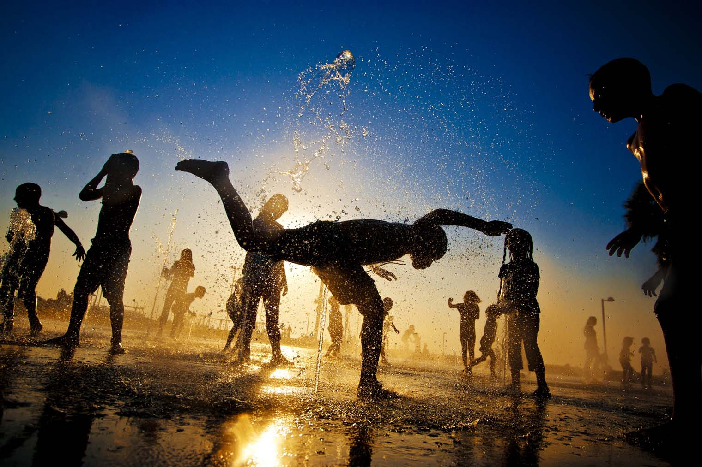

Pools and Splash Pads
Chicago's Western Suburbs
Looking for a place for your kids to cool off and expel some energy? Below, you'll find a list of pools and splash pads in Chicago's western suburbs. (Places with free admission are noted.)
- Aurora - Philips Park Family Aquatic Center: Located at 828 Montgomery Road.
- Aurora - Philips Park Splash Pad: Located at 1000 Ray Moses Drive. (free)
- Lisle - Dragonfly Landing: Located at the intersection of Garfield Ave. and Route 53. (free)
- Lombard - Paradise Bay Water Park: Located at 437 E. St. Charles Road.
- Oswego - Prairie Point Splash Playground: Located at 4120 Plainfield Road. (free)